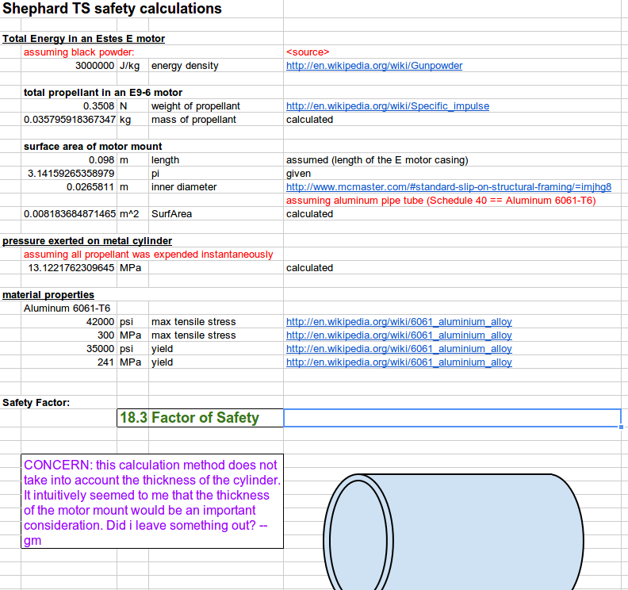
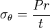
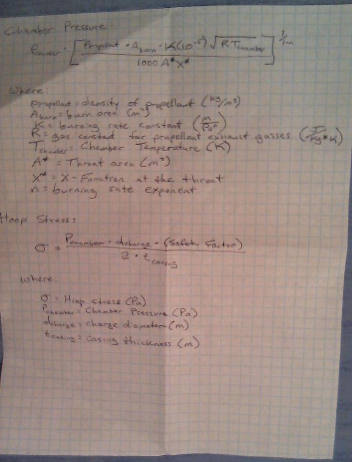

Forums » Discussion »
v1.0 - SEP Step 4 - Preliminary Design - Mechanical
Added by Jeremy Wright over 10 years ago
The block diagram is one day away from being gelled, and today is the deadline to start this step. The block diagram is separated into two main parts - mechanical and Data Acquisition (DAQ), so I thought I'd get preliminary design discussions rolling on each of them.
Two questions that come to mind on the mechanical side of things are:
- Do we want to build Shepard in a vertical orientation, horizontal orientation, or in such a way that it can be switched?
- What materials do we want to evaluate for this design?
When going through this I think it would be good to review the Resources discussion
There is a little bit of mechanical discussion starting with Ben's first comment here
And of course we always need to keep the requirements doc in mind.
If I've missed any other discussions that contain mechanical items, please post them here.
Replies (25)
RE: v1.0 - SEP Step 4 - Preliminary Design - Mechanical - Added by J. Simmons over 10 years ago
I'm on vacation this week, but I do want to say I feel very strongly that we should use a horizontal orientation for Shepard. Vertical test stands for motors have to account for the change in mass of the motor during the burn when calculating the performance because the thrust and the weight are in the same axis. A horizontal test stand will eliminate this complication. Plus, I believe we have seen some photos in the resources section that show s mall horizontal test stands, leaving me encouraged about the level of difficulty involved in building a horizontal test stand.
RE: v1.0 - SEP Step 4 - Preliminary Design - Mechanical - Added by Jeremy Wright over 10 years ago
That's where I thought we were headed but I don't think we've ever documented it. I agree that a horizontal design is the way to go.
RE: v1.0 - SEP Step 4 - Preliminary Design - Mechanical - Added by Jeremy Wright over 10 years ago
The first page of the NAR motor testing manual shows several pictures, including some of their test stand in use. In two of the pictures, it looks like the test stand is most of the width of a cinder block, and is 1-1/2 cinder blocks in length. I measured a cinder block that I had and it was 15.5 inches long by 7.5 inches wide.
One possible design that came to mind is the following.
- An L-shaped frame made of aluminum bar . If the bar was purchased in enough length, it would be possible to cut triangular pieces for angle brackets as well. Buying from McMaster-Carr, a 1/4" thick bar that's 6" wide by 3 ft long would be approximately $41.51. You could put counter-sunk clearance holes in the bottom plate so that the stand could be mounted to a heavier object to keep it stationary.
- A linear guide rail with nylon cage . Gives a low friction slide to mount the motor adapter to. Approximately $21.34. A simpler/cheaper alternative to this would be to have the motor adapters (see next item) be held in place inside a nylon (delrin, etc) mount that's drilled to have a slip fit with the rod. This might require some sort of safety catch so that the motor could never eject itself backwards away from the load cell and thus slip out of the mounts.
- Aluminum rod to use as the motor adapters. I was thinking that if we used large enough rod to accommodate the largest motor's diameter, then we could use the same size rod for all motors. We would make several motor adapters, simply boring the correct size hole in each adapter for the motor. That way the center line of contact between the adapter and the load cell never moves no matter what size motor we're testing. That would also allow the motor mount to be standard for all motor sizes. A 1-1/2" diameter bar 1 ft in length would run $12.78.
That's a total for mechanical (with the linear slide) of roughly $76, not including fasteners and other incidentals. If we went with the slip fit nylon motor mounts, that would probably knock about $15 off. There's a lot of room for discussion including materials and less expensive sources.
Any thoughts on this preliminary design idea? My thought was to keep it as simple as possible while allowing us to test multiple motors without having to do much reconfiguration of the stand. Using the slip fit mount would allow extremely quick changes of motor sizes.
RE: v1.0 - SEP Step 4 - Preliminary Design - Mechanical - Added by Greg Moran over 10 years ago
Test post from my phone... With a photo too.
2012-06-04_15.09.06.jpg (1.5 MB)
RE: v1.0 - SEP Step 4 - Preliminary Design - Mechanical - Added by Jeremy Wright over 10 years ago
Great! For anyone who wasn't in the Google+ Hangout tonight, we were discussing ways to incorporate things like hand drawn sketches into these forum posts. It looks like Greg's phone handled the ODE interface without any trouble. The idea being that you could take a picture of a napkin sketch in a restaurant and post it here for the rest of us.
Don't laugh, the SR-71 Blackbird was first sketched on a napkin. Or so the story goes...
RE: v1.0 - SEP Step 4 - Preliminary Design - Mechanical - Added by Ben Barnett over 10 years ago
Sorry I missed the "hangout". I don't know how to access Google+ and have been very busy lately dealing with my Mother-in-law's medical issues. It doesn't help that she lives up in Greenville, which is about 50 miles from our home.
Cheryl and I are supposed to be down in Tennessee next week, after which I might be able to devote some time to this project.
Among the many aluminum extrusions that are available are large angle sections with unequal sides. I will see if I can find anything big enough for the main frame. Also among aluminum extrusions is "hollow rod" which is another way of describing tubing with a wall thickness that is a major portion of the total radius. Starting with a hole through the center of the "rod" saves a drilling step and also reduces material cost.
I hope that I will get time to think seriously about ways to reduce the cost of force measurement. But "there is no such thing as a free lunch" in the sense that reducing material cost will significantly increase assembly and calibration time, and probably increase the complexity of signal conditioning. Among the low-cost, high-complexity force measurement methods is, for example, measuring the inductance of a coil spring (as the spring is compressed the inductance will increase. This will decrease the resonant frequency with a fixed capacitor, and frequency is a relatively easy measurement. It would be sort of like running a freq' counter in "period-average" mode.
Ben
RE: v1.0 - SEP Step 4 - Preliminary Design - Mechanical - Added by Jeremy Wright over 10 years ago
Thanks for the input Ben. We have had a few hangouts about the preliminary design, and I've started to dump the decisions into the wiki . I'm stalled out on the mechanical part of the design right now though because we need to discuss a concern that Greg has about using balsa wood and cardboard in the motor mount. Until I get all of the notes cleanly integrated into the wiki doc you can read the hangout meeting minutes via the links at the top.
RE: v1.0 - SEP Step 4 - Preliminary Design - Mechanical - Added by Greg Moran over 10 years ago
After reading through the preliminary mechanical design (https://opendesignengine.net/projects/shepard-ts/wiki/Preliminary_Design_v1_0) I'm kinda lost. I couldn't tell if there was agreement on the vertical vs horizontal configuration... Being a visual person I need a picture or sketch to understand what is being described. I'll take a shot at doing some sketches (probably on Wednesday) to see if I can understand what is being described.
RE: v1.0 - SEP Step 4 - Preliminary Design - Mechanical - Added by Greg Moran over 10 years ago
Nevermind... I didnt go back far enough in this thread... Found the mention of the preference for horizontal configuration.
Greg Moran wrote:
... I couldn't tell if there was agreement on the vertical vs horizontal configuration...
RE: v1.0 - SEP Step 4 - Preliminary Design - Mechanical - Added by Greg Moran over 10 years ago
Ok, here are some numbers based on Estes thrust-vs-time plots (http://www2.estesrockets.com/pdf/Estes_Time-Thrust_Curves.pdf).
From looking at A through E sized motors:
overall Max thrust: 30 Newtons (6.75 lbs) for a duration of 0.05 secs
largest Average thrust: 10 Newtons (2.25 lbs) for a duration of ~3 secs.
shortest duration burn: 0.7 secs
RE: v1.0 - SEP Step 4 - Preliminary Design - Mechanical - Added by Greg Moran over 10 years ago
Question: Why are we using an assembly similar to the Rep Rap? (http://reprap.org/wiki/File:Plumb-1.jpg). I think this makes the design unnecessarily complicated and increases the number of piece parts required. It also requires know how to use a 3-D printer, or the purchase of parts from someone who knows how. I would prefer to use parts that are readily available in any local hardware store. In principle, the fewer specialized tools required the better, and don't forget to K.I.S.S. 
I also took a shot at sketching a simpler design using just wood and 2 smooth rails.

{kind=link}
{kind=link}
RE: v1.0 - SEP Step 4 - Preliminary Design - Mechanical - Added by Jeremy Wright about 10 years ago
After talking through some design changes over a Google+ Hangout, Greg set out to run some calculations. His task was to make sure that an aluminum (6061-T6) motor mount tube could contain the force of an explosive motor failure. This discussion started out being held over email, so I wanted to copy everything here for documentation's sake.
Below is a snapshot of Greg's spreadsheet at the time I'm writing this, and here is a link to the spreadsheet on Google Docs.

Greg said: I did some rough calculations of the safety factor using a metal (aluminum) motor casing for the Shephard Test Stand. All source information and assumptions should be documented in the spreadsheet. Please let me know when you'd like to go over this calculation.
J. said: I think the part you missed to include the role thickness plays in the design is the hoop stress calculation (http://en.wikipedia.org/wiki/Cylinder_stresses). I believe you will need to calculate the force on the inner walls of the motor mount and then apply that force to the hoop stress equation to get the stress in the motor mount walls. (Note, my mechanics is a bit rusty, so someone else should weigh in as well.)
Ethan said:

Back when one of my projects did hydrostatic testing for cylindrical tanks and motor cases for rockets, the governing stress for case failure under internal pressure was the hoop stress (the case failed in hoop first). We used the above equation to calculate the stress at which failure would occur.
Our methodology for calculating internal pressure was to use rocket propulsion equations for the propellant chemistry, temperature as well as throat diameter of the nozzle. A rundown of the equations can be found in Sutton's 'Rocket Propulsion Elements' (http://www.amazon.com/Rocket-Propulsion-Elements-7th-Edition/dp/0471326429).
Please let me know if this helps.
J said: Ethan, thanks for the info. This looks like what we are looking for.
Gregs_Safety_Calcs.png (95.5 kB)
{kind=link}
Ethans_Equation.png (489 Bytes)
{kind=link}
RE: v1.0 - SEP Step 4 - Preliminary Design - Mechanical - Added by Greg Moran about 10 years ago
RE: Ethan's suggestions for Hoop Stress calculation.
@Ethan, I think the method/equation that you're recommending assumes a "thin-walled" pressure vessel, which in this case may not be a valid assumption. Typically, the rule of thumb for this is thickness is <10% of the radius (in our case thickness=0.133" and radius=0.5"). If we make that assumption anyway, our safety factor is >4.6.
If we do not assume the cylinder is "thin-walled" then the equation gets more complicated (Wikipedia started talking about constants of integration!) I think at this point, I'm going to put together a quick test:
- cut open an Estes E-size engine and extract the propellant,
- grind the propellant and pour into the specified pipe with one end sealed off,
- and ignite it.
- taking video documentation the whole time.
(is this an accurate enough demo to simulate a catastrophic motor failure?)
hoop_stress.png (57 kB)
{kind=link}
RE: v1.0 - SEP Step 4 - Preliminary Design - Mechanical - Added by Jeremy Wright about 10 years ago
@Greg - In the interest of expediting this part of the project, I would say your plan of action seems like a reasonable test. Hopefully we can get a hangout put together about the equations too soon though.
Can you get the same sort of failure by plugging the nozzle of the motor (with something like a screw) and then igniting it? That would save you the work of extracting and grinding the propellant.
RE: v1.0 - SEP Step 4 - Preliminary Design - Mechanical - Added by J. Simmons about 10 years ago
I agree we should test this to confirm the analysis results, but I am not sure the loosely packed powder from the motor will explode (at least not in the same way as a motor failure). As I recall, the pressure in the motor is a key driver of the explosive force, and the mostly empty motor mount will probably be a very different pressure environment. I also wonder how we can trigger a motor failure (plugging the nozzle seems obvious, but I wonder if a screw would be sufficient, or if it would just fly out at some point as an impromptu projectile).
I did some looking around for a firework that we could consider using as a substitute for the motor, but so far I have not found anything that looks equivalent to the 35.8 g of powder in the E size motor.
RE: v1.0 - SEP Step 4 - Preliminary Design - Mechanical - Added by Jeremy Wright about 10 years ago
The screw probably would become an impromptu projectile, but I wonder if the pressure inside the motor would build so quickly that even a momentary blockage of the nozzle would result in an explosive failure. If you're looking for a safer plug, maybe some epoxy in and over the nozzle might work. My concern with the firework substitute is that the powder mix inside may vary significantly from what's in an Estes motor. Unless you analyze the mix you'll never be able to be sure if you're generating even close to the same pressures with the firework.
This is all just conjecture on my part though.
RE: v1.0 - SEP Step 4 - Preliminary Design - Mechanical - Added by Jeremy Wright about 10 years ago
I'm still waiting on a copy of Rocket Propulsion Elements to come in, so I had a look around to try to find another source.
http://www.ewp.rpi.edu/hartford/~ernesto/SPR/Gandia-FinalReport.pdf
Have a look at page 14 under "Chamber Pressure and Hoop Stress".
RE: v1.0 - SEP Step 4 - Preliminary Design - Mechanical - Added by Jeremy Wright about 10 years ago
I reading through the document that I just posted, it looks like page 6 gets to the heart of the matter for us.
RE: v1.0 - SEP Step 4 - Preliminary Design - Mechanical - Added by Jeremy Wright about 10 years ago
It's a little hard to read, but here's my cheat sheet of what we need from that document.

Hoop_Stress_Cheat_Sheet.png (673.8 kB)
{kind=link}
RE: v1.0 - SEP Step 4 - Preliminary Design - Mechanical - Added by J. Simmons about 10 years ago
Jeremy,
The more I look into the fireworks that exist, the more I tend to agree with you about not getting an apples-to-apples comparison. In terms of getting the motor to fail, tthe epoxy might be a good idea. We should be able to mount an igniter in the motor and then cover the end of the motor with the epoxy. (Oh, how it pains me to be discussing how to purposely cause a catastrophic motor failure of a reliable and safe commercial motor.) I think the forced motor failure needs a little testing of its own (from a very big distance, and possibly on smaller motors than E size) to make sure we have that process working before relying on it for component level testing for the design (ugh, more work).
Back to calculating the required thickness of the motor mount, I think the challenge here is that most of the equations we will find will be for calculating the stress on the chamber walls during operation (when the chamber pressure is well behaved) vs what we need which is to calculate the stress on the motor mount when the motor explodes. I have some text books with me on my trip, I will see if I can find anything that will help shed some light on this in any of them.
RE: v1.0 - SEP Step 4 - Preliminary Design - Mechanical - Added by Jeremy Wright about 10 years ago
Ah, gotcha. Looking at the equations above in light of what you've said about well behaved operation vs failure, I can see multiple values that might become unknowns when the motor casing explodes. It seems to me like you'd have too many of those unknowns during an explosive failure to get a reasonable level of accuracy. It will be interesting to see what you find in your text books about this.
If Ethan is allowed to talk about it, I'd like to hear how his project group handled this.
RE: v1.0 - SEP Step 4 - Preliminary Design - Mechanical - Added by Ben Barnett about 10 years ago
I have been staying out of the explosion/containment discussion due to lack of knowledge on that subject. What is the probability that a standard rocket motor will explode? From my limited experience, it seems that the probability is VERY low. I have never seen, nor heard about such an event.
OTOH, I have seen 2 events that looked like off-axis thrust right at the end of the main burn, well before the ejection charge detonated. Visually, the exhaust plume looked like it went off-axis by about 30-45 degrees causing the rocket to tumble before deploying the parachute. I saw this several years ago when model rockets were launched at Twin Towers Park, which is also the local site for R-C gliders, and R-C electric aircraft. Is off-axis thrust still a failure mode with significant probability? Should we be doing anything to detect it?
RE: v1.0 - SEP Step 4 - Preliminary Design - Mechanical - Added by J. Simmons about 10 years ago
Ben,
I am not sure what the probability of a catastrophic motor failure (read nozzle becomes blocked and the motor explodes) is, but the fallout from such a failure would be significant if it led to any injuries (especially if that included any public viewers). So, we want to ensure any such failure is completely contained.
The other failure mode you bring up is a good one to consider as well. I think there are two things we need to consider with an off axis burn. The first is we want to make sure the guide rails will keep the motor from coming loose. The second is we want to make sure the off axis thrust is unlikely to damage the test stand itself. I think our current design concept should address the first item, but I am not quite as confident about the second (I can imagine an off axis burn could damage data lines for the thermocouples if it went the wrong way). Anyone have any other concerns about the kind of damage an off axis burn could cause or comments on these concerns?
RE: v1.0 - SEP Step 4 - Preliminary Design - Mechanical - Added by Jeremy Wright about 10 years ago
My guess is that we will see some patters resulting from off-axis burn in the thrust curve, and we'll just have to learn what that looks like. Depending on what's causing the off-axis burn, maybe the casing temperature will increase as well?
I think that the high-speed video system that we've proposed for Shepard 2.0+ would be ideal for detecting this sort of thing. I would be interested in keeping track of the thrust curves when off-axis burn is observed by a test stand operator.
As far as the potential for damage to the stand itself - I was hoping the mechanical team would route any thermocouple wiring out of the safest area in the load cell end of the motor mount tube, away from the nozzle. The Arduino will probably be attached near that area, so I think running the thermocouple wires that way would be the cleanest solution, and would decrease the risk of problems from things like off-axis burn. We need to make sure not to route the wires near/through the proposed exhaust ports for the parachute charge though.
RE: v1.0 - SEP Step 4 - Preliminary Design - Mechanical - Added by Jeremy Wright about 10 years ago
Here are some videos that Greg took when he did testing to see if an aluminum tube could hold the chamber pressure generated from an explosive Estes motor failure. Notice that using epoxy to block the nozzle does not necessarily induce explosive failure of the motor.
(1-25/25)